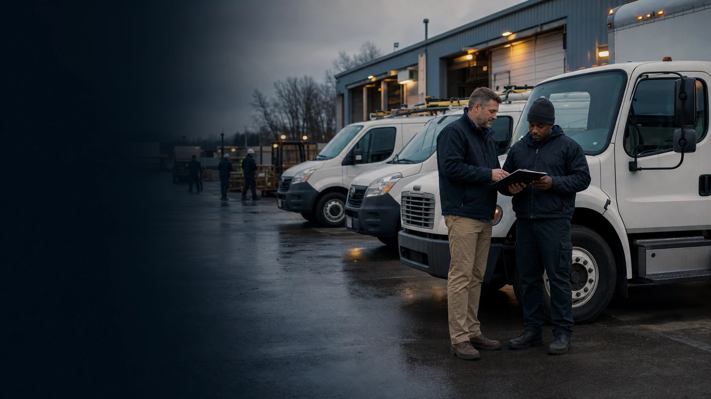
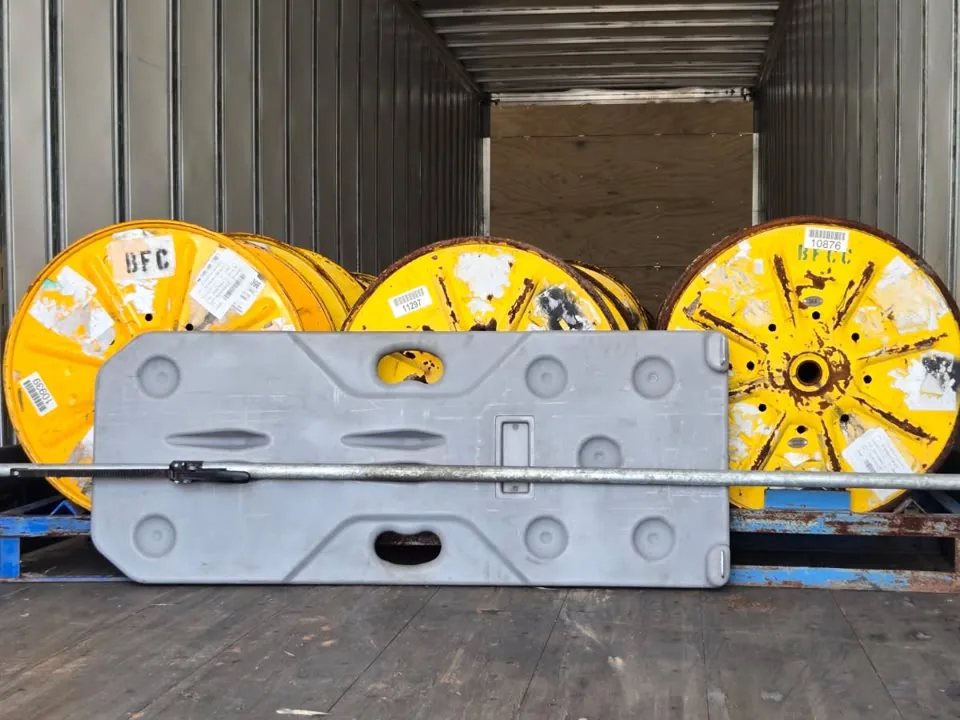

Distribution and retail fleets
Keep driver status, vehicle readiness, proof photos, route records, and internal handoffs visible across locations.

For private fleets
Start with the driver, vehicle, proof record, or internal exception that needs a named owner. BOF turns the handoff into a ready, reviewable operating path.
Private fleet operating clarity
BOF helps a private fleet make readiness, vehicle evidence, completion proof, and cross-team ownership reviewable without building a separate trucking back office from scratch.
Who this is for
BOF supports companies that operate their own vehicles and service teams but do not want a separate trucking back-office buildout.
Keep driver status, vehicle readiness, proof photos, route records, and internal handoffs visible across locations.
Track worker readiness, vehicle records, completion proof, incident notes, and exception owners for mobile teams.
Organize driver documents, equipment records, delivery proof, jobsite photos, and safety follow-up in one reviewable workflow.
Support driver readiness, route proof, vehicle records, service completion, and internal review without exposing sensitive customer details.
Connect yard, route, dock, proof, and maintenance records so operations can see what is ready and what needs review.
Use BOF as an operating layer for readiness, records, proof, and exceptions without positioning the company as a for-hire carrier.
Problem
Driver files may sit with HR, vehicle records with operations, incident notes with safety, completion proof with field managers, and cost follow-up with finance. BOF helps private fleets see what is ready, what is blocked, and who owns the next action.
Vehicle readiness, driver documents, proof photos, route notes, and internal approvals are hard to review when they live in separate folders and inboxes.
Completion photos, signed paperwork, delivery notes, and incident evidence need to stay tied to the service or route record.
Operations, HR, safety, finance, and field teams need the same answer about blockers and owners.
What BOF does
The work stays practical: collect the right records, apply the right rule profile, surface the exception, and keep the owner visible.
Track CDL, medical card, MVR, DQF, training, onboarding, and internal authorization statuses.
Organize inspection records, maintenance proof, unit assignments, and issue notes around readiness status.
Keep service completion, route proof, delivery photos, damage photos, and supporting notes attached to the operating record.
Show missing documents, expired records, unresolved incidents, delayed proof, and internal blockers before they create wider disruption.
Name the owner, next action, due date, status, and consequence so work does not disappear between departments.
Connect private fleet documents to BOF intake, classification, rule profiles, readiness status, and human review.
Cargo proof workflow
Private fleets often need more than a completed route. They need proof that cargo was loaded, secured, delivered, and documented. BOF can help private fleets capture cargo securement photos, delivery evidence, exception notes, and proof records. If a fleet uses products such as Freight Brace, BOF can include securement verification as part of the private fleet readiness and proof workflow.
Keep cargo, dock, route, and delivery evidence attached to the internal operating record.
Document securement, service completion, photo evidence, and exception notes across distributed teams.
Give reviewers a clearer evidence packet when cargo condition, seal status, or securement proof becomes part of the question.

For private fleets using products such as Freight Brace, BOF can capture securement photos, delivery proof, and exception notes so internal teams can see what was checked, when it was documented, and what evidence is available later.
30-day pilot
A focused review that shows where private fleet readiness, proof, and handoff work is clear, blocked, or at risk.
Commercial path
Pricing can be structured around driver count, vehicle/equipment count, workflow scope, and level of BOF operating support.
Interactive demo links
These routes show the document, driver, readiness, and scenario surfaces behind the offer.
BOF supports readiness, proof, document intake, onboarding, and operating handoffs. It does not replace legal, safety, finance, or management judgment.
Continuity starts with a ready vehicle
Private fleets depend on operations, HR, safety, finance, and field teams having the same answer. Bring one vehicle, driver, route, or proof issue into a review that identifies the record, owner, and consequence.
Private fleet BOF assessment
Start with the workflow your team already chases and see how BOF would organize readiness, proof, owners, and next actions.